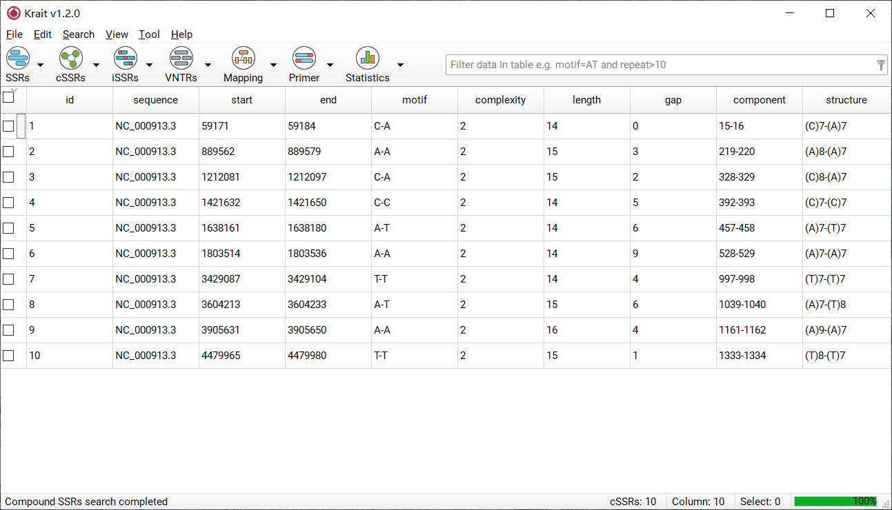
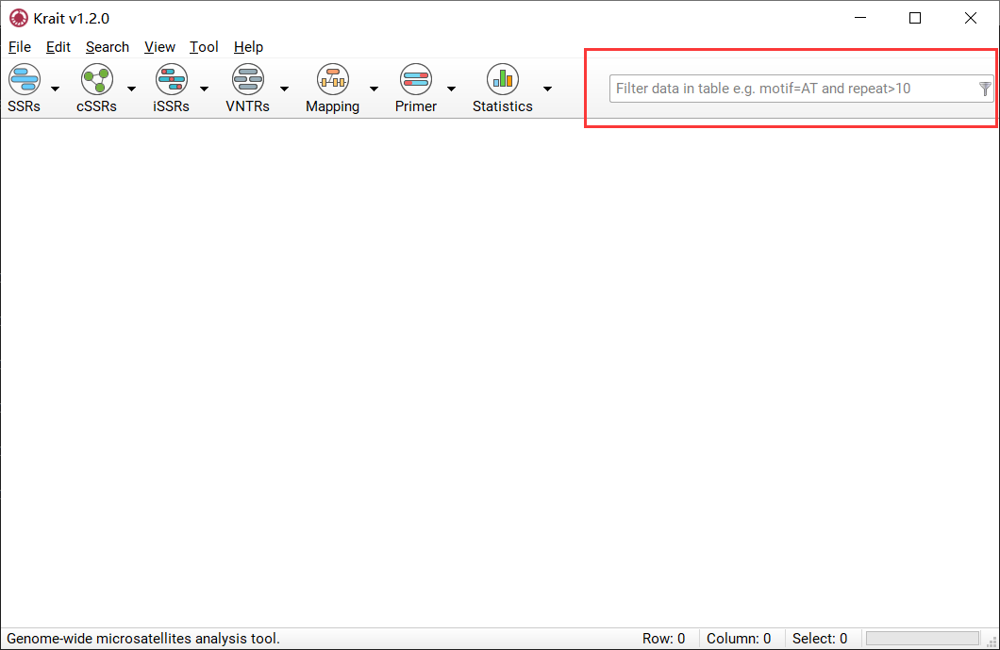
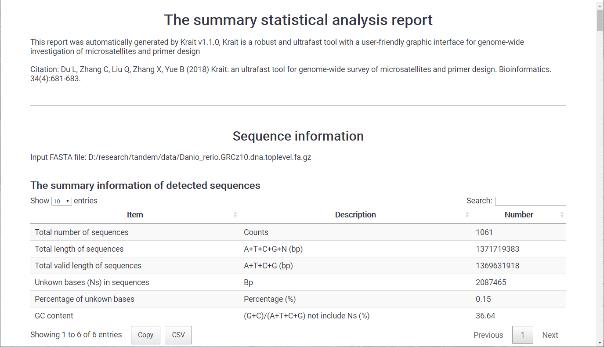

Microsatellites Investigation and Primer Design¶
Du L, Zhang C, Liu Q, Zhang X, Yue B (2018) Krait: an ultrafast tool for genome-wide survey of microsatellites and primer design. Bioinformatics. 34(4):681-683. 10.1093/bioinformatics/btx665
Preface¶
Introduction¶
Krait is a robust and ultrafast tool with a user-friendly graphic interface for genome-wide investigation of microsatellites, which attempts to overcome the limitations of the currently available tools. Krait is written in Python and can be run as a standalone desktop application on Windows, Linux or Mac systems without dependencies. The microsatellite search engine is written in C and compiled as Python modules for import into Krait. Krait has many features: 1) Identification of perfect SSRs, imperfect SSRs (iSSRs), compound SSRs (cSSRs) and VNTRs from extremely large genome. 2) Locating the SSRs in gene coding region. 3) Design primer for microsatellite 4) Statistical analysis and plotting. 5) Supporting gzip compressed fasta as input file. 6) Supporting export FASTA, GFF3 or CSV. 7) Downloading DNA sequence from NCBI database.
License¶
Krait is distributed under a license called GNU General Public License, version 2 (GPL2).
Requirements¶
Krait is an operating system independent application and works on Windows, Linux and Mac systems. We recommend at least 1GB of RAM and 5GB of available hard disk space. In order to process very large genomes, a faster processor (64 bit) and larger amount of physical memory will be needed.
Installation¶
On windows, the preferred way to install Krait is to download the installer directly from https://github.com/lmdu/krait/releases Then double click the downloaded installer to install the program following the on-screen instructions.
On Linux or Mac, download the latest version of Krait for your operating system from the following URL: https://github.com/lmdu/krait/releases and then decompress the downloaded file. Just simply double click krait to run the program not required installation.
User Interface¶
The general components of the Krait main user interface are shown in Figure 1.

Figure 1: Krait main user interface
Search for perfect microsatellites or show results if you have searched.
Search for compound microsatellites or show results if you have searched.
Search for imperfect microsatellites or show results if you have searched.
Search for VNTRs or show results if you have searched.
Mapping perfect, compound, imperfect microsatellites or VNTRs to coding region of genes.
Design primers for microsatellites screened from results.
Perform statistical analysis and save to file.
Filter results using user inputted conditions.
Display the result of analysis in table.
The number of table rows.
The number of table columns.
The number of selected rows.
The task progressing.
Import Sequences¶
To start a new analysis you just have to import your sequence data from files into Krait. The application accepts text or gzip compressed files containing one or more DNA sequences in FASTA format (Figure 2). These files may have the extension .fasta, .fna, .fa, .txt, .fasta.gz, .fna.gz, .fa.gz. A sequence in FASTA format begins with a single-line description or header starting with a “>” character. The rest of the header line is arbitrary but should be informative. Avoid strange characters in the sequence header, such as ’&’ or ’\’ and use ’N’ to denote in-determinations in the sequences.

Figure 2: An example for the FASTA format
Import One FASAT File¶
Go to File Menu -> Import Fasta.
Select a FASTA formatted file containing your sequences.
Click Open to import FASTA file.
Import Multiple FASTA Files¶
Put your FASTA files in a folder
Go to File Menu -> Import Fastas in Folder.
Select the folder to load FASTA files in that folder.
Import Fasta from NCBI¶
Krait provides a tool for user to download the FASTA formatted DNA sequence from NCBI nucleotide database (Figure 3).

Figure 3: Downloading sequence from NCBI database
Go to Tool Menu -> Download Sequence from NCBI to open download dialog.
Input accession, version or GI number of a sequence in NCBI nucleotide database.
Click Browser to select an output file path.
Click OK to start download file and wait for finish.
Once download finished, go to File Menu -> Import Fasta to select your downloaded file to import.
Search for Tandem Repeats¶
Krait allows user to identify perfect microsatellites (SSRs), compound microsatellites (cSSRs) and imperfect SSRs (iSSRs) as well as VNTRs.
Search for SSRs¶
Start SSR Search¶
Import fasta sequence file (See 2 Input Files).
Go to SSRs (toobar) -> Specify Minimum Repeats to specify minimum repeats.
Click SSR search bubtton
 to start search SSRs.
to start search SSRs.
Note
Search Menu -> Search for SSRs and SSRs (toolbar) -> Search for SSRs will remove the previous searched SSR results and then search for SSRs again.
SSR Search Results¶
After SSR search finished, a table containing results will be displayed. An example was shown in Figure 4. The result table contains 9 columns.

Figure 4: An example for SSR search result
column |
description |
|---|---|
id |
unique identifier generated by Krait |
sequence |
the name of sequence where SSR was found |
standard |
the standardized motif |
motif |
repeat unit of SSR |
type |
SSR type, mononucleotide, dinucleotide etc corresponding to motif length |
repeat |
number of repeats |
start |
start position of SSR in original sequence, 1-based |
end |
end position of SSR in original sequence, 1-based |
length |
the length of SSR (bp) |
Show SSR Results¶
If you have searched SSRs, you can click SSR search button or go to SSRs (toolbar) -> Show Perfect SSRs or go to View Menu -> Show Perfect SSRs to display SSR results in table.
Remove SSR Results¶
You can go to SSRs (toolbar) -> Remove Perfect SSRs or View Menu -> Remove Perfect SSRs to remove searched SSR results.
Search for cSSRs¶
Start cSSR Search¶
Search perfect SSRs (See 3.1.1).
Go to cSSRs -> Specify Maximum Distance to specify a maximum distance (dMAX) allowed between two perfect SSRs.
Click cSSR search button
 to start search cSSRs.
to start search cSSRs.
Note
Search Menu -> Search for cSSRs and cSSRs (toolbar) -> Search for cSSRs will remove the previous searched cSSR results and then search for cSSRs again.
cSSR Seach Results¶
After cSSR search finished, a table containing results will be displayed. An example was shown in Figure 5. The result table contains 10 columns.

Figure 5: An example for cSSR search result
column |
description |
|---|---|
id |
unique identifier generated by Krait |
sequence |
the name of sequence where cSSR was found |
start |
start position of cSSR in original sequence |
end |
end position of cSSR in original sequence |
motif |
the motifs of individual SSR in a cSSR |
complexity |
the number of individual SSR in a cSSR |
length |
the length of cSSR |
gap |
total bases of distance between two SSR |
component |
the SSR id of individual SSRs comprised cSSR |
structure |
the detail of SSRs comprised cSSR |
Show cSSR Results¶
If you have searched cSSRs, you can click cSSR search button or go to cSSRs (toolbar) -> Show Compound SSRs or View Menu -> Show Compound SSRs to dispay cSSR result in table.
Remove cSSR Results¶
You can go to cSSRs (toolbar) -> Remove Compound SSRs or View Menu -> Remove Compound SSRs to remove searched cSSR results.
Search for iSSRs¶
Start iSSR Search¶
Import fasta sequence file (See 2 Input Files).
Go to iSSRs (toobar) -> Specify Search Parameters to specify minimum length and repeats of seed, maximum consecutive edits, gap penalty and minimum score required.
Click cSSR search bubtton
 to start search cSSRs.
to start search cSSRs.
Note
Search Menu -> Search for iSSRs and iSSRs (toolbar) -> Search for iSSRs will remove the previous searched iSSR results and then search for iSSRs again.
iSSR Search Results¶
After iSSR search finished, a table containing results will be displayed. An example was shown in Figure 6. The result table contains 13 columns.

Figure 6: An example for iSSR search result
column |
description |
|---|---|
id |
unique identifier generated by Krait |
sequence |
the name of sequence where SSR was found |
standard |
the standardized motif |
motif |
repeat unit of SSR |
type |
SSR type, mononucleotide, dinucleotide etc. corresponding to motif length |
start |
start position of SSR in original sequence |
end |
end position of SSR in original sequence |
length |
the length of SSR (bp) |
match |
the number of matches |
substitution |
the number of substitutions |
insertion |
the number of insertions |
deletion |
the number of deletions |
score |
the score of iSSR |
Show iSSR Results¶
If you have searched iSSRs, you can click iSSR search button or go to iSSRs (toolbar) -> Show Imperfect SSRs or View Menu -> Show Imperfect SSRs to dispay iSSR result in table.
Remove iSSR Results¶
You can go to iSSRs (toolbar) -> Remove Imperfect SSRs or View Menu -> Remove Imperfect SSRs to remove searched cSSR results.
Search for VNTRs¶
Start VNTR Search¶
Import fasta sequence file (See 2 Input Sequences).
Go to VNTRs (toobar) -> Specify Search Parameters to specify minimum and maximum length of motif and minimum repeats.
Click VNTR search bubtton
 to start search VNTRs.
to start search VNTRs.
Note
Search Menu -> Search for VNTRs and VNTRs (toolbar) -> Search for VNTRs will remove the previous searched VNTR results and then search for VNTRs again.
VNTR Search Results¶
After VNTR search finished, a table containing results will be displayed. An example was shown in Figure 7. The result table contains 8 columns.

Figure 7: An example for VNTR search result
column |
description |
|---|---|
id |
unique identifier generated by Krait |
sequence |
the name of sequence where SSR was found |
motif |
repeat unit of SSR |
type |
VNTR type, motif length |
repeat |
number of repeats |
start |
start position of SSR in original sequence |
end |
end position of SSR in original sequence |
length |
the length of SSR (bp) |
Show VNTR Results¶
If you have searched VNTRs, you can click VNTR search button or go to VNTRs (toolbar) -> Show VNTRs or go to View Menu -> Show VNTRs to display VNTR results in table.
Remove VNTR Results¶
You can go to VNTRs (toolbar) -> Remove VNTRs or View Menu -> Remove VNTRs to remove searched VNTR results.
Settings for Search¶
The setting panel also can be opened by Edit Menu -> Preferences. The setting panel was shown in Figure 8.

Figure 8: The setting panel for search
The setting panel contains 6 subpanels:
Minimum repeats Panel |
specify minimum repeats for each type (di- tohexa-nucleotide) of perfect SSRs |
cSSR Panel |
specify maximum distance allowed between two perfectSSRs |
VNTR Panel |
set minimum and maximum length of motifs and minimumrepeats |
iSSR Panel |
set minimum repeats and length of extended seed, maximum consecutive edits allowed in an extension, mismatch penalty, indel penalty and minimum required score |
Motif Standardization Level Panel |
set the motif standardization level (0-4), the level only affects the result of perfect and imperfect SSRs search |
Flanking Sequence Panel |
set the flanking sequence length, used to design primer, export FASTA and display the details of SSR |
Motif Standardization¶
Level 0 |
no standardization will be performed |
Level 1 |
Similar motifs. For example, CA can be viewed as AC. ATGcan represent TGA and GAT |
Level 2 |
Reverse complementary motifs, including Level 1. For example, CAT is a reverse complementary motif of ATG. ATG can represent TGA, GAT, CAT, ATC and TCA |
Level 3 |
Complementary motifs, including Level 1 and Level 2. For example, TAC is a complementary motif of ATG. ATG can represent TGA,GAT, CAT, ATC, TCA, TAC, ACT and CTA |
Level 4 |
Reverse motifs, including Level 1, Level 2 and Level 3. For example, GTA is a reverse motif of ATG. ATG can represent TGA,GAT, CAT, ATC, TCA, TAC, ACT, CTA, GTA, TAG and AGT |
Mapping Repeats in Genes¶
Start Mapping Repeats¶
Search SSRs, cSSRs, iSSRs or VNTRs (See 3 Search for Repeats )
Go to Mapping (toolbar) -> Import Annotation File to select a GTF or GFF file corresponding to the imported sequence file.
Click the locate button
 to start locating.
to start locating.
Locating Results¶
If locating task finished, the repeats located in gene exon, intron, CDS or UTRs will be marked as different colors in table. An example was shown in Figure 9.

Figure 9: An example for locating result
Select by Color¶
This function allows selection of repeats on the basis of their color i.e. the region in where the repeat located. You can go to Mapping (toolbar) -> Show SSRs in CDS, Exon, UTR or Intron to screen as shown in Figure 10.

Figure 10: Selection by Colors
Remove Mapping Results¶
You can go to Mapping (toolbar) -> Remove mapping result to remove mapping results.
Primer Design¶
Start Primer Design¶
Select tandem repeats in table that you want to design primer.
Go to Primer (toolbar) -> Specify Primer3 Setttings to set parameters for primer3.
Click design primer button to start design primer for selected tandem repeats.
Primer Design Results¶
After primer design, a table contains primer details will be display. The result table contains 12 columns. An example for primer design was shown in Figure 11.

Figure 11: An example for primer design
id |
unique identifier generated by Krait |
category |
the type of repeats, ssr, issr, cssr or vntr |
target |
the id of the tandem repeat |
entry |
the primer number for tandem repeats. A tandem repeats can contains multigroup primers |
product |
the product size of primer |
forward |
the sequence of forward primer |
reverse |
the sequence of reverse primer |
tm1,tm2 |
the temperature of the forward primer and reverse primer |
gc1,gc2 |
the GC content of the forward primer and reverse primer |
stability1,2 |
the end stability of the forward primer and reverse primer |
Show or Remove Primer Design Results¶
If you have designed primers, you can go to Primer (toolbar) -> Show Designed Primer to display primer results. The primer results can be removed by Primer (toolbar) -> Remove Designed Primer.
Settings for Primer Design¶
The settings for primer design shown in Figure 12 are the same with Primer3 tags. Click the setting name will redirect to the corresponding tags in Primer3 manual.

Figure 12: Setting panel for primer design
Filter Data in Table¶
Start Filter Data¶
Verify that the current display is a table with rows.
Input the conditions into input box as shown in Figure 13.
Press Enter to filter rows in table.

Figure 13: Filter condition input box.
Construct Filter Conditions¶
Krait provides comparison operators and logical operators that allow you to construct the condition. The comparison operators include =, >, <, >=, <=; the logical operators include AND, OR. There is a special operator IN can be used. The condition is case-insensitive. Thus you can use column name and operators to construct a condition to filter table rows. The numeric column can be allowed to use all comparison operators and the text column only be allowed to use = and IN. Examples:
Suppose you want to find SSRs whose motif is ATG, you can construct a condition:
motif=ATG
If you want to find SSRs whose motif is ATG and repeats greater than 10, you can construct a condition:
motif=ATG and repeat>10
If you want to find SSRs whose motifs are ATG, AT, AAAG and repeats between 10 and 15, you can construct a condition:
motif in (ATG,AT,AAAG) and repeats>=10 and repeats<=15
If you want to find SSRs whose length less than 12 or length greater than 20, you can construct a condition:
length<12 or length>20
Statistical Analysis¶
Perform statistical Analysis¶
If you have searched SSRs, cSSRs, iSSRs or VNTRs, you can just click the statistics button  to start statistical analysis.
to start statistical analysis.
If you have performed statistical analysis, click the statistics button will display the statistical results. If you want to perform statistical analysis again, you can go to Statistics (toobar) -> Statistical Analysis.
Statistical Analysis Results¶
Once statistical analysis finished, a statistical report contains several tables and graphs will be generated and save to a html file. You can use browser (Chrome or firefox) to view html report.

Figure 14: A part of statistical report
You can also go to File Menu -> Export Statistical Report to perform statistics and export html formatted statistical report.
Refresh Statistical Results¶
If you have performed statistical analysis, you can go to Statistics (toolbar) -> Refresh Statistical Analysis to regenerate statistical results.
Export Output Files¶
Krait allows user to export Table (CSV, GTF, GFF) and FASTA formatted files.
Export Table¶
Select rows in table that you want to export.
Go to File Menu -> Export Selected as Table and select a format (CSV, GTF, GFF or TEXT) and provide an output file name.
Click Save to export to output file.
Export FASTA¶
Select rows in table that you want to export.
Go to File Menu -> Export Selected as Fasta and provide an output file name.
Click Save to export to output file